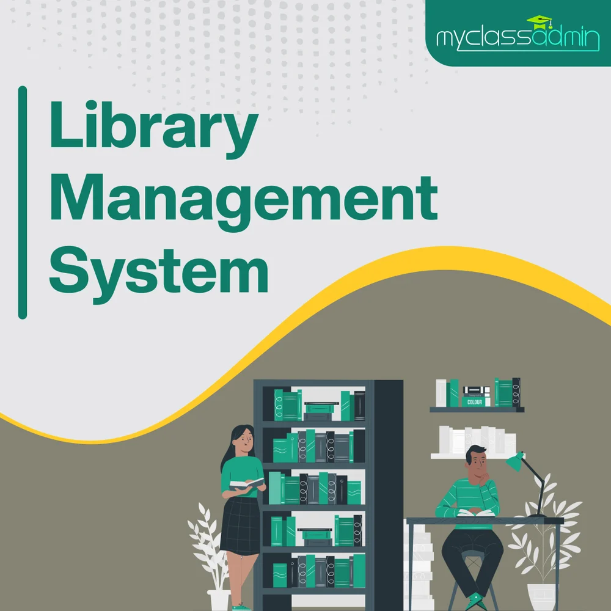

Ebook Accessing Portal
This Library provides access to several collections of full-text ebooks covering a wide range of Computer Science and electronics areas. An eBook is an electronic version of a traditional print book that can be read by using a personal computer or by using an eBook reader.For collecting and managing ebook using Calibre Software... click here to go to SCOE ebook.

eLMS
click here to go to SCOE eLMS.